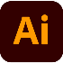
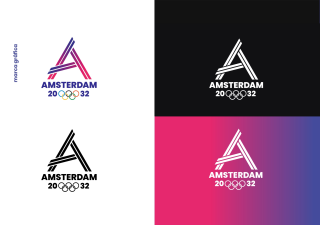
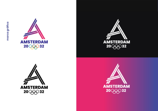
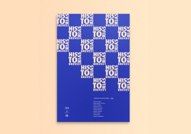
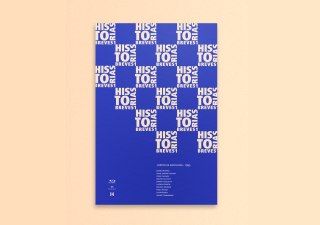

Cristian Nicolás
Hernández
Diseñador UX/UI y estudiante de Diseño y Comunicación Visual en la Universidad Nacional de Lanús.
- Fecha de nacimiento: 12/01/2000
- Dirección: Don Orione, Almirante Brown.
- Teléfono: +541122817994
- Email: crisnicohernandez@gmail.com
DATOS PERSONALES
SOBRE MÍ
Apasionado del diseño UX/UI, tengo 22 años y gran capacidad para aprender. Me defino como autodidacta desde pequeño, soy atento y analÍtico, creo que lo mas importante es el entendimiento del grupo para mayor rendimiento laboral y comodidad. Además, me gusta mucho el arte, el dibujo, y tengo como hobbie la natación.
EXPERIENCIA LABORAL
Practicante como Diseñador UX/UI
- InkuA | Marzo 2022- Actualidad
- Líder de equipo en proyecto de rediseño de página web y creación de app mobile para una ONG llamada Caballos en Libertad de La Plata.
Proyecto en conjunto de prácticas como Diseñador UX/UI
- ID for IDEAS. | Diciembre 2021 - Marzo 2022
- Trabajo colaborativo en área UI, junto a developers Front End y Back End. Diseño de una web para un banco ficticio.
EDUCACIÓN
Coderhouse
dic 2021-feb 2022 | Curso certificado en Diseño UX/UI Avanzado
ago 2021-nov 2021 | Curso certificado en Diseño UX/UI
Universidad Nacional de Lanús
2018-actualidad | Licenciatura en Diseño y Comunicación Visual
Bachiller en Economía
2017 | Instituto secundario San Pio X
SOFT SKILLS
- Design thinking
- Trabajo colaborativo
- Gestión del tiempo
- Toma de decisiones
- Capacidad de análisis
- Apertura al aprendizaje
- Comunicación y escucha activa
- Productividad
- Empatía con el usuario
SKILLS
IDIOMAS
-
Español: Nativo
-
Inglés: Intermedio
PORFOLIO
A continuación podrán ver parte de mis proyectos, realizados tanto en la universidad, como en Coderhouse. Son de los más tiempo he dedicado, y de mis favoritos.
 

 
